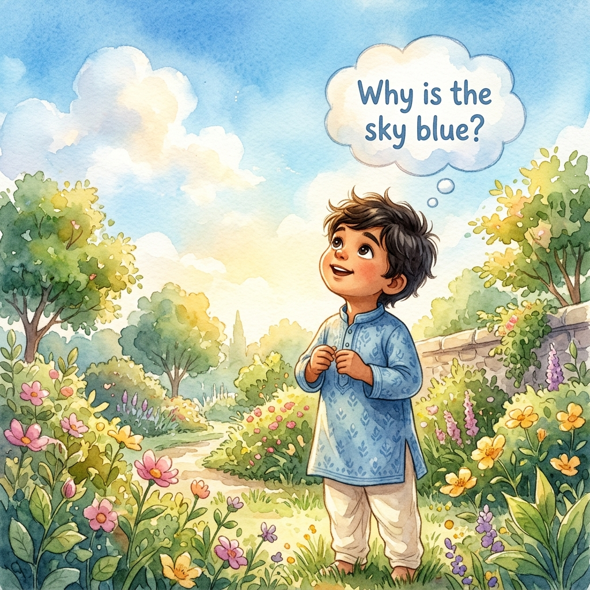
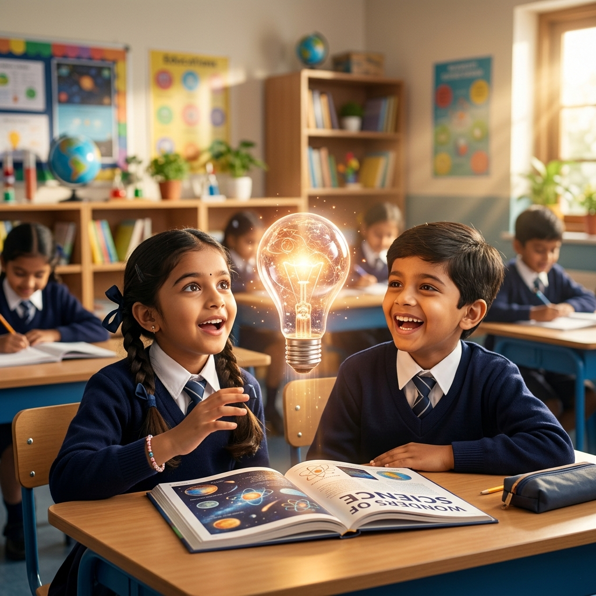
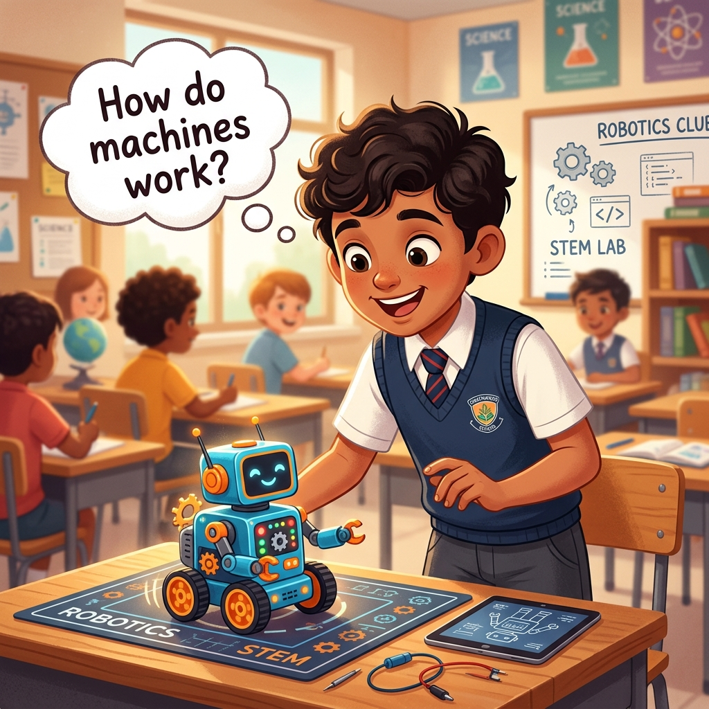
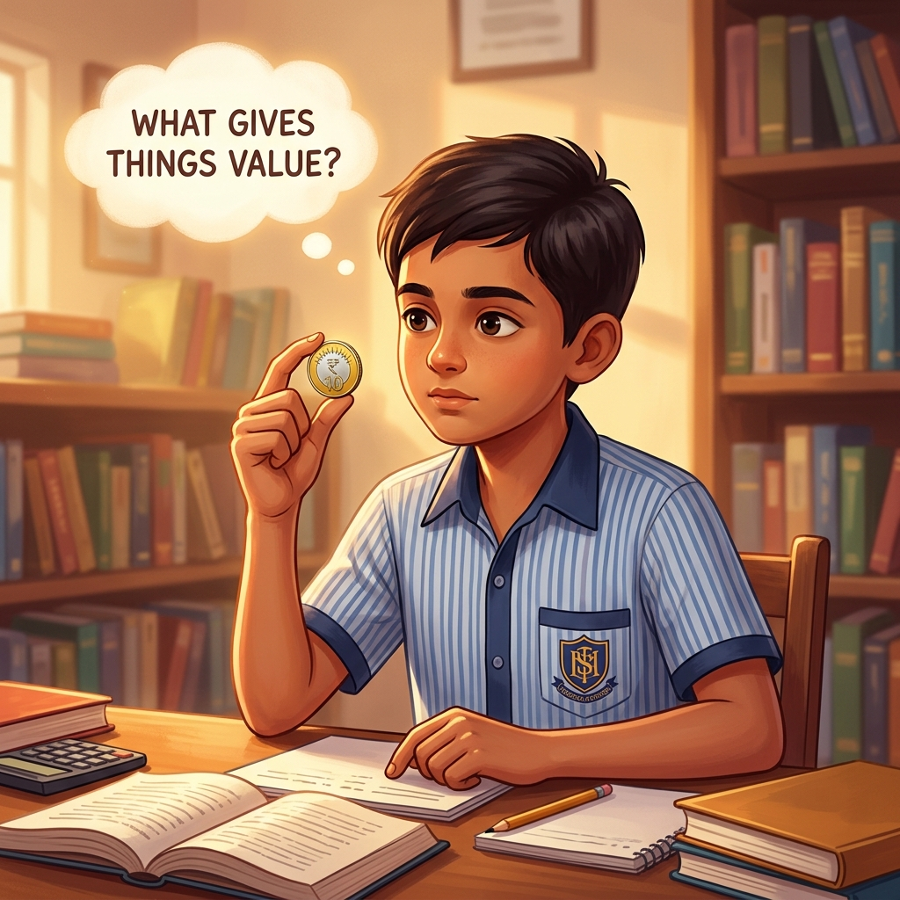
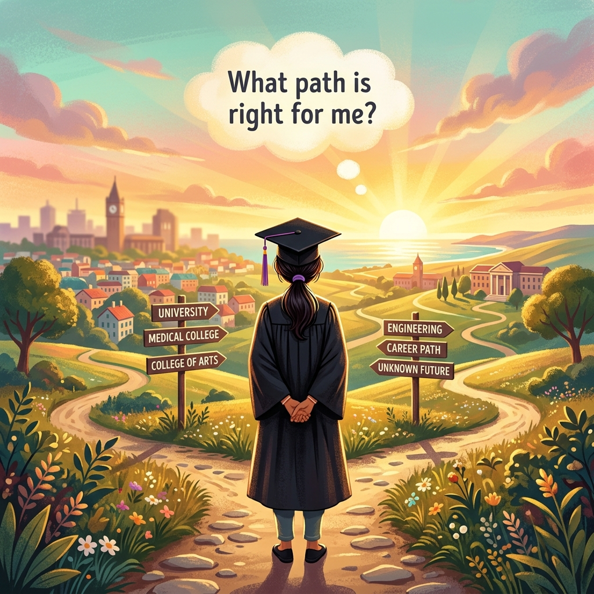
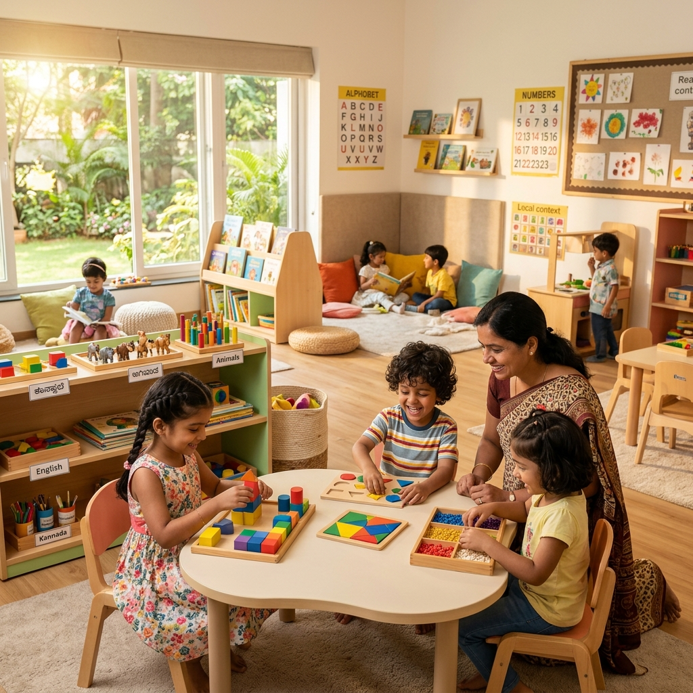
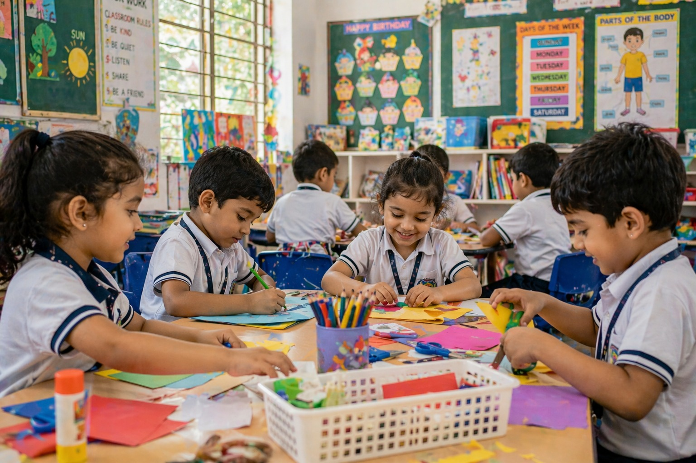
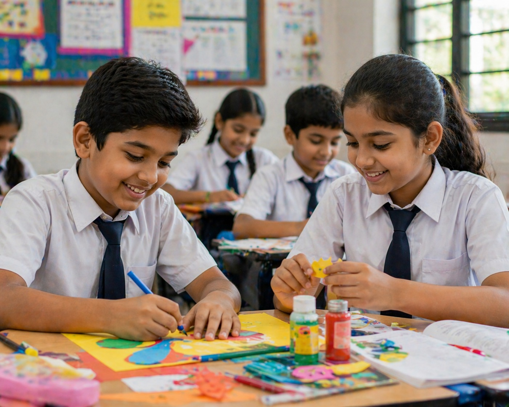
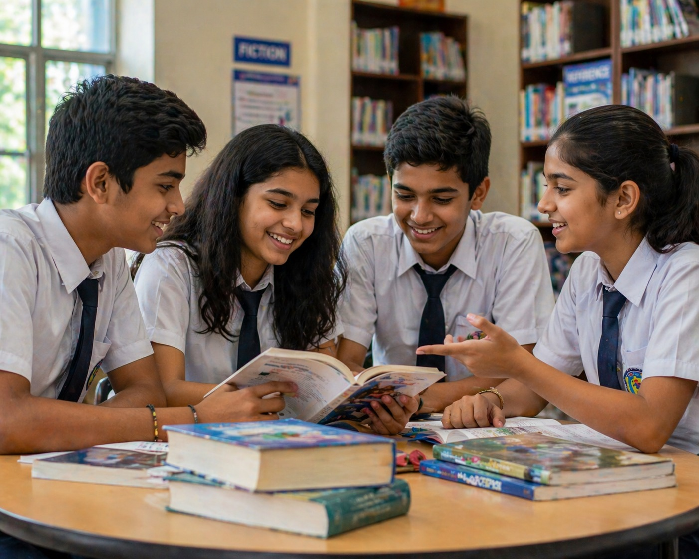

Pre-Nursery – Grade 2
Where Curiosity Begins


Where Curiosity Begins

Technology and Real-world Skills Begin Early

Research, Discussion and Independent Thinking

Academic Strength and Leadership Development
At RV Public School (RVPS), learning begins with questions, not answers. From Pre-Nursery to Grade 10, students are taught to engage with what they learn not just remember it. Lessons move through discussion, simple research and hands-on work, so children learn to observe, ask questions and gradually make sense of the world around them.
The focus is on helping students think for themselves. They learn to understand information and use it with clarity in real life. Over time, this builds their confidence and the ability to approach problems with a steady, independent mindset.
RVPS offers education from early childhood to secondary school, guiding students through every stage of development. Each stage is designed around how children actually learn at that age.




Our admissions process is simple, transparent, and designed to help you make the right decision for your child without pressure.
Fill in the form on this page or call us directly. Tell us about your child and the grade you're applying for. Our admissions team will respond within 24 hours.
Online or by phoneVisit RVPS to meet the principal and teaching team. This is your opportunity to see the learning environment, ask any questions, and let your child experience the campus.
By appointment · WeekdaysComplete the admission documentation and fee payment to officially secure your child's seat.
At RVPS, education begins with curiosity and is shaped through consistent engagement. In the early years, learning works best when there is a strong connection between school and home. Parent–student engagement is therefore not treated as an add-on, but as an essential part of the process. When children feel that continuity, they settle in better, gain confidence, and show a natural willingness to learn.
As students grow older, the focus gradually shifts. They are expected to express themselves clearly, take part in discussions, and handle ideas with a certain level of maturity. Opportunities to build communication and public speaking are built into their routine including through the SkillSphere collaboration.
The academic approach remains steady and considered. There is no attempt to rush through content. Time is given for students to understand what they are learning and work through it properly. They are expected to question, to make sense of what they study, and not rely only on memorised responses.
The aim of RVPS is simple. To help students grow into individuals who are confident in their thinking, responsible in their actions and prepared for what lies ahead.
Communication is the skill that unlocks every other skill. At RVPS, public speaking and structured debate are not extras, they are built into the school calendar from Grade 3 upwards.
Students speak regularly, in class, in structured settings and in front of audiences. Confidence in speech grows gradually and consistently, not from a single workshop.
Students learn to form an argument, listen to the other side, and respond with clarity. Debate builds critical thinking alongside strong communication habits.
Clear expression, in conversation, in presentations and in explanations, is practised consistently across all subjects and grade levels at RVPS.
SkillSphere runs as a core co-curricular strand from Grade 3. It is part of how RVPS students grow.
Students research real-world topics like scientific phenomena, global mysteries and questions like the Bermuda Triangle and flight disappearances; encouraging deeper thinking and the habit of independent inquiry from an early age.
Students begin learning robotics and AI concepts early, helping them understand how technology actually works and building future-ready skills well ahead of peers.
Students learn the basics of money, value and economic thinking including classroom barter activities that make abstract concepts tangible and practical.
RVPS promotes balanced technology use, where students learn to think deeply and focus without excessive screen dependence, a genuinely rare and valuable skill today.
Art and craft activities are linked to academic subjects so students understand ideas through visual and hands-on learning.
Through fun classroom barter activities among students, students understand the value of exchange and acquire basic negotiation and decision-making skills from an early age.
Unused notebook pages are donated to Youth for Seva, where they are repurposed into notebooks for children in need. Through this initiative, students experience sustainability and social responsibility as lived practice.
Everything you need to make a confident decision. If your question isn't here, call or write to us, we're happy to answer.
We are located near Lalbagh, one of Bengaluru's most accessible and well-connected neighbourhoods. Campus tours are available on weekdays by appointment, we encourage every family to visit before deciding.
No. 14/1, Lalbagh Road
Near Lalbagh West Gate
Basavanagudi, Bengaluru – 560 004
Karnataka, India
+91 80 2600 1234
info@rvpsschool.in
We respond to all enquiries within 24 hours, Monday to Saturday.
Monday – Friday
8:00 AM – 3:30 PM
Saturday
8:00 AM – 12:30 PM